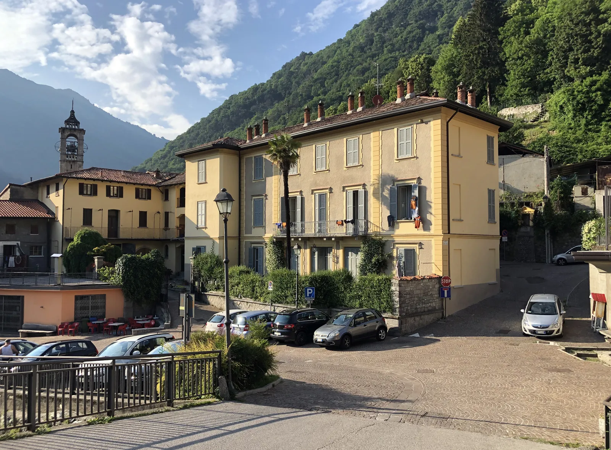
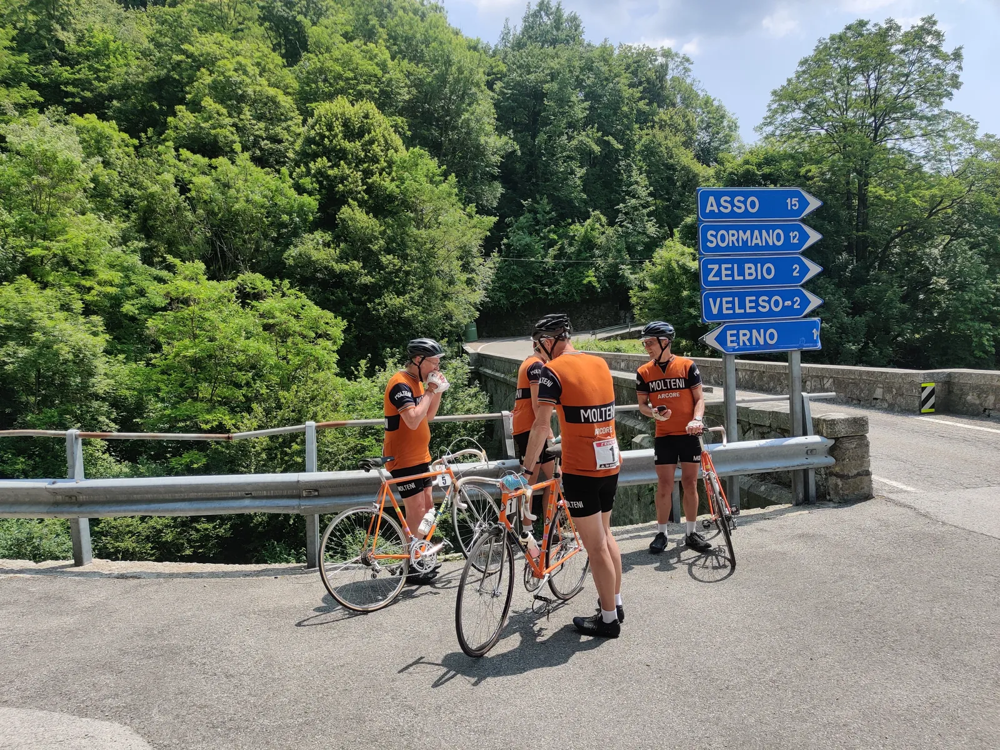
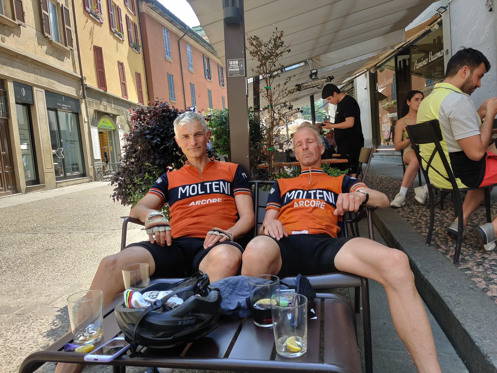

Tilbage til Il Lombardia

Il Lombardia 1973 er beretningen om Squadra Moltenis tur tilbage til Lombardiet, hvor Merckx blev frarøvet sin 3. sejr i Lombardiet Rundt, og turen tilbage til hvor Moltenis historie begyndte.
Antipasto – Dolomitterne
Tre Cime di Lavaredo ligger forude, og majestætisk rager de tre enorme klipper op i himlen. Vejen op er lang og ubønhørlig. Eigil Leegaard og Kristian Blume træder roligt og kontrolleret. Men det er ikke længe, de kan holde det tempo. Længere fremme ser de en gruppe ryttere på carboncykler og i stramme, moderigtigt jordfarvede aerosuits. Eigil og Kristian kan ikke lade være; de smider kæden i 42-23 og sætter tempoet voldsomt op, og hurtigt har de indhentet gruppen. Men et venligt “buongiorno” kører Eigil og Kristian forbi gruppen af carbonister, der ligger og laver strøm i deres ultra lette compact-gearing. Måbende må de se Eigil og Kristian forsvinde i en sky af orange uld…
Eigil Leegaard og Kristian Blume er sendt af sted på højdetræningslejr forud for Squadra Moltenis tur til Lombardiet. Træningen går planmæssigt og blodværdierne er jævnt stigende. Men Eigil og Kristian kan dog også godt fornemme en stigende utilfredshed blandt carbonisterne i området, som rutinemæssigt køres ud af hjulet over pas som Gardena, Sella, Pordoi, Giau, Val Parola/Falzarego, Campalongo og Fedaia. Derfor er de, via en telefax fra Sportsdirektør Klaus Maarup Kjærsgaard, blevet bedt om at terpe god opførsel. Helt enkelt og pædagogisk 500 gange håndskrevet: ”Jeg må ikke jagte carboncykler”.
Kristian Blume tvivler dog på, at det hjælper…

Il Primo – Comosøen og Madonna del Ghisallo
Espressoen og yoghurten står klar på langbordet i den gamle villa fra 1600-tallet. Squadra Moltenis hold er nu samlet i den lille bjergby Lasnigo, der ligger ovenfor Comosøen. Eigil Leegaard og Kristian Blume er kørt i bil fra Dolomitterne og Kaptajn Bjørnsteen, Lars Munch, Svend Seegert, Grane Maaløe, Pelle Clemmensen og Jeppe Thiemer ankom med fly sent i nat.

Forretten er en tur omkring Comosøen med afslutning på toppen af den ikoniske Madonna del Ghisallo. Allerede kort efter start rammer vi Colma di Somano, der rejser sig knap 700 højdemeter, 9,5 km med 6,5% i snit. Eigil og Kristian viser resten af holdet, at de har fundet deres bjergben. Svend skal tydeligvis lige have kørt flyrejsen ud af benene, men nedkørselsfarten har han stadig intakt. Svend hamrer ned af SP44 mod Comosøen med resten af holdet efter sig. Men Svend ved godt, at han ikke skal køre helt til bunden. Et vigtigt stop venter lige efter byen Zelbio. En bro over en kløft. Men ikke en hvilken som helst bro. Det er broen hvor Remco Evenepoel tog den ud over gelænderet i Lombardiet Rundt 2020: Der er svimlende langt ned. Uhyggeligt meget længere ned end når man ser det på TV.


Vi fortsætter til Bellagio, hvor vi tager færgen til Varenna, og fortsætter sydpå langs søen mod Lecco, hvor Kaptajn Bjørnsteen kalder til is-stop. Klassisk italiensk is med fint granuleret is.
Efter Lecco fortsætter vi nordpå mod Bellagio, hvor finalen ligger og venter: Madonna del Ghisallo, 567 højdemeter, 9,4 km med 6% i snit. Madonnaen ligger badet i den bagende eftermiddagssol. Kristian Blume flyver op og sætter dagens bedste tid (Strava). Resten af holdet, der går ind på stigningen med halvtomme dunke, kører hurtigt tør. Der opstår en lettere krise. Eigil stopper pludseligt. Han har mistet orienteringen. Kaptajn Bjørnsteen kommer ham til undsætning, og de får tanket vand ved en slagter.
Efter de behørige hilsner til Bartali og Coppi på toppen af Ghisallo kører holdet ned til Lasnigo, hvor kolde øl venter. Og en rund fødselsdag for Lars Munch skal også fejres.


Il Secondo
Der bliver tanket godt på ved morgenmaden. Alle ved, at det bliver en lang dag med en frygtindgydende menu: Madonna del Ghisallo fra bagsiden, Muro di Sormano og Monte Bisbone – i alt over 2000 højdemeter.
Vi triller op til Madonna del Ghisallo, hvor vi på Museo del Ciclismo Madonna del Ghisallo skal møde vores gode ven Fabio Perego – og ikke mindst Mario Molteni. Mario er søn af legendariske Ambrogio Molteni, der grundlagde det professionelle cykelhold Molteni Arcore.
Museo del Ciclismo Madonna del Ghisallo er et fantastisk sted, der oser af myter og historie. Vi møder Fabio og Mario. Fabio har taget sin scooter op til Madonna del Ghisallo. Men Mario Molteni er på cykel sammen med en lille gruppe ryttere fra La Fondazione Ambrogio Molteni. Vi hilser, snakker, ser på cykler, får taget fotos, drikker espresso – og vi aftaler, at vi dagen efter skal forbi Molteni-fabrikken (der nu hedder Salmilano) uden for Arcore. Men først har vi en bjergetape, der skal køres.
Vi triller ned mod foden af Sormano-stigningen, hvor det først går lidt op ad Via Monti di Sera, der er hovedvejen til Sormano. Til stor glæde har et par dedikerede Molteni-tifosis over natten muntret sig med malerbøtter og manifesteret deres kærlighed til holdet på den ru asfalt.

Godt halvvejs oppe mod Colma di Sormano kan man skyde “genvej” via Muro di Sormano: En uden for kategori led stigning på godt 2 km, der har en gennemsnitlig stigning på over 17%, og langt det meste af tiden stiger med over 20%. Muro di Sormano er en morder – specielt i gear 42-28, som er det mindste gear en 1970’er cykel kan komme ned i.
Inden vi kaster os ud i Muro di Sormano gør vi et kort stop: Hvor er Svend og Lars? I det samme tikker en besked ind: Vi er her. Hvor er I?

Svend og Lars har overset det højresving, der leder op mod Colma di Sormano, og har hamret videre ned gennem dalen og er nu næsten nede på Posletten! De har nu godt 1000 højdemeter til toppen af Sormano.
Kampen på Muro di Sormano kan næsten ikke beskrives. Den skal mærkes. Hvert et tråd er en kamp. Både fysisk og mentalt.
Ikke uventet flyver Kristian Blume op, og laver også dagens hurtigste (Strava) tid på 12 min 38 sek. Jeppe kæmper sig ind på en stærk 2. plads. Nummer 3 og 4 bliver Kaptajn Bjørnsteen og Eigil Leegaard, der lidende følges ad.

Da holdet igen er samlet, hamrer vi ned af SP44 mod Comosøen, og videre ind mod Como. Længere fremme venter Monte Bisbone, så der bliver tanket vand ved Stadio Comunale G. Sinigaglia. Stadionet stod færdigt i 1927 og blev bygget efter Benito Mussolinis præcise vilje: Et futuristisk byggeri i beton med tribuner hele vejen rundt, en velodrome og en fodboldbane i midten. Det var her Eddy Merckx vandt Giro di Lombardia i 1973.

Monte Bisbone rejser sig fra Comosøens bred til 1300 meter over havets overflade. De færreste ved, at der lige udenfor Como ligger en stigning, der matcher Alpe d’Huez. Monte Bisbone er 1100 højdemeter, 14,5 km lang og stiger i snit 7,6%. Men modsat Alpe d’Huez’s fine asfalt, går Bisbones underlag fra pænt ringe til direkte forfærdeligt! Vejen har revner, lapper og huller hele vejen op, og to af hårnålesvingene er belagt med brosten (som er den oprindelige belægning hele vejen op).
Monte Bisbone ligger og viser tænder i den stegende middagshede. Kristian Blume, Eigil Leegard og Jeppe Thiemer lægger hårdt fra land. Det er tydeligt, at der er et internt opgør under opsejling. Thimer presser Blume med insisterende forhjulslir, og halvvejs oppe koger Kristian Blume over. Han vender om! “Jeg gider ikke den her lorteasfalt. Jeg kører på bar,” råber han, og glider ned med Como igen. På vej ned trækker han Svend Seegert. Lars Munch og Grane Maaløe med i faldet.

Jeppe Thiemer og Eigil Leegaard når toppen først. Kaptajn Bjørsteen ligger til en sikker tredjeplads, men Pelle Clemmensens store dieselmotor får først rigtig fat to tredjedele oppe på bjerget – og så kommer han bagfra, som skudt ud af en kanon.

Vejen ned fra Monte Bisbone er et kapitel for sig. Den ujævne og hullede vej er ikke for sarte sjæle, og den sætter de gamle Campagnolo Nuovo Record bremser på overarbejde. Men kvartetten kommer ned uden varige mén – og fortsætter ind mod Como. I mellemtiden har kvartetten med Blume drukket ud på en lokal bar – og er kørt mod Lasnigo. Grane har dog en krankskål, der har skruet sig halvt ud, så farten er moderat.
I Bjørnsteen kvartetten er jagten sat ind. Men en tåbelig algoritme i Garmin gør, at gruppen bliver ledt ind på en sti, der ikke længere er en sti. Det er et vandløb inde i en lille skov. Men der er ikke tid til at vende om – så vandløb, toppede marksten og klipper bliver forceret.
Hjemme venter iskolde og meget store øl – og et fantastisk besøg på den meget lokale familierestaurant. To pastaforretter, en hovedret, ost og kage.

Formaggio e Frutta – besøget
Det er en varm dag i Lombardiet. Allerede fra morgenstunden er temperaturen i den lille bjergby over 20 grader.
Vi ruller ned mod Posletten, hvor varmen ligger som en tung dyne. Vi kører mod Milano, og vores mål er den nordøstlige forstad Brianza, hvor vi skal besøge Mario Molteni på salamifabrikken Salmilano. Mario er søn af legendariske Ambrogio Molteni, der grundlagde det professionelle cykelhold Molteni Arcore. Molteni var navnet på salamifabrikken af samme navn, men også historien om en familie, der ikke kun brændte for cykling, men som på et tidspunkt i sin historie besluttede at tro på, at investere i sit eget cykelhold, for at lancere sine egne produkter i Italiens opsving i 1960’erne. Først med italienske ryttere, som gjorde det muligt for Molteni at gøre sig kendt uden for Lombardiet. Derefter, med Eddy Merckx’ og internationale ryttere, især belgiske ryttere, krydsede Molteni-mærket nationale grænser og blev et ikon for cykelsportselskere.
Endnu engang går der båndsalat i vores Garmin-computer, og vi ender med at køre 20 km i nødsporet på Strade Statali SS36 – ikke den mest charmerende måde at opleve Po-sletten på. Men vi har en aftale med Mario Molteni på Salmilano – og vi ankommer naturligvis til tiden.
Mario og Fabio, der modtager os med åbne arme, fører os op på Marios kontor. Men allerede på vej op mod kontoret, kan man høre den ene underkæbe efter den anden ramme gulvet: På væggene hænger rammer med originale Moltenitrøjer, Maglia rosa og Maillot jaune trøjer fra 1970’erne. Et par reoler er fyldt med pokaler. Eddy was here…

Efter vi har set og smagt Salmilanos produktion af fantastiske salamier, har Mario Molteni lige noget han vil sige til os: Af taknemmelighed for vores passion for holdet og dets historie, og den måde vi viser trøjen frem på, vil han gerne udstyre hele holdet med drikkedunke, t-shirts og originale Moltenitrøjer i den fineste merinould. Vi er målløse – og vi flyder over af taknemmelighed.

Inden vi kører videre aftaler vi med Mario, at vi ses i Gaiole in Chianti og kører L’Eroica med La Fondazione Ambrogio Molteni.
Dolce – Ciao Signori Bugno
Fabio fører an. Først til Arcore, hvor vi ser den gamle fabriksbygning, hvor Moltenis salamiproduktion oprindeligt lå. Hovedbygningen har stadig den oprindelige orange farve, som cykelholdets ikoniske farve er designet efter.

Fabio fortsætter gennem Milanos nordøstlige forstæder mod formiddagens sidste stop ved Autodromo Nazionale di Monza. Han er godt kørende på en Fondazione Ambrogio Molteni specialudgave af Merckx 525’eren. En flot cykel! En rigtig flot cykel, faktisk. Men altså – ikke af stål. Han ved det godt, Fabio. Der er mange der kører 525, og der er mange der kører i en moderne udgave af den ikoniske blue-suede jersey. Men der er ikke mange, der kører på stål og i uld.
Alligevel er det overraskende, da han drejer hovedet og siger: “Vi følger med i jeres oplevelser på de sociale medier, vi læser jeres beretninger, vi ser jeres billeder. Det er fedt! I er det rigtige hold – I er VORES hold, og vi kommer til Danmark når lejligheden byder sig for at møde jer igen.”
Der smiles, og Fabio hvisker: “Vi har en lille overraskelse i baghånden. I’m sure your team will like it”
Kort tid efter standser vi ved Monzas hovedindgang. Lidt væk står en fyr med hans Vespa. Et diskret vink fra Fabio sætter manden i bevægelse. Svend spotter først mandens identitet. Var det mon den ubesværede entré – spejlbilledet af fortidens souplesse og overlegne kørestil, der satte ham på sporet? Eller var det bare auraen af en dobbelt landevejs verdensmester, der krøb i forvejen? Anslaget fra manden, der førte Giroen fra start til mål, fra Bari til Milano i 1990?
Imidlertid når Svend end ikke at titulere Signori Bugno, for ham er det, før han selv, pegende på vores cykler, tager ordet. “Ciao! Er det Colnagoer, de dér? Så skal vi have et billede!”

Mæt af Monza og Arcore, men sultne efter sen frokost tager Squadra Molteni afsked med Fabio ved Please Pizzaria con Cucina i Lesmo. Temperaturen kysser 30 grader. Uagtet går de fleste med en pizza Diavola. Vi er allerede akklimatiserede. Jeppe ihukommer dog sit ophav og bestiller en Nordica. Som viser sig at være brolagt med ½ tomme smeltet ost og en større stime nordsørejer. Bad choice…
De små 40 km hjem forløber i god ro og orden uden grussti-Garmin-vrøvl. Men selvfølgelig stikkes der på bakkerne og hamres til nedad, dog afbrudt af opsamling og et par fotosessions. Men ingen dunkopfyldninger, og Diavolaerne og solen tørrer systemet godt ud. Og så går det selvfølgelig galt.
Da alle er hjemme i Lasnigo mangler der nogen! Blume, der har nøglen til vores villa, og Grane er væk!
Der er kaos.
Lars har kørt all-out på 10%-stigningen op mod villaen i Lasnigo. Han havde lagt øl i køleskabet før afgang og havde de sidste adskillige kilometer visualiseret den dugdrivende, iskolde 60 cl. flaske, liggende solidt i hånden, men kurs direkte mod hans indtørrede læber. Og nu står han og river i en låst dør, før han resignerende smider sig på brostenene . Svend ser tomt frem for sig.

En besked tikker ind: “Vi er nede i floden for at bade.”
Kaptajn Bjørnsteen, der har animeret spurten mod villaen, udspyr eksotiske italienske gloser. Va a fan####… Hele weekenden har han hørt Pelle, Blume og Grane tale om nøgenbadning i søen, hvis muligheden bød sig. Og flere gange havde han mindet om katolicismens fromhed og kardinalernes hævn, hvis nogle formastede sig til at moone på stranden. Og så er de satanstejleme hoppet i floden i stedet for.
Pelle, Jeppe og Kaptajnen ruller tilbage mod floden. Egentlig for at uddele tæv og hente nøglen, men da de mødes af en storsmilende, revitaliseret Grane med koldt vand i håret og nøglen i hånden på vej til villaen, ændres agendaen. Få minutter senere ligger alle tre i koldt flodvand til hagen. Vel det nærmeste et 70’er cykelhold kan komme på moderne kryoterapi. Og de kolde øl? – Jo, de blev drukket ved hjemkomst.

Squadra Molteni, Lasnigo, Lombardia.
FORZA MOLTENI